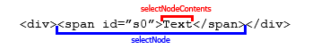

В этой статье речь пойдёт о документированных, но нечасто используемых объектах Range, TextRange и Selection. Мы рассмотрим вольный перевод спецификаций с понятными примерами и различные кроссбраузерные реализации.
Эта статья представляет собой обновлённый вариант статьи Александра Бурцева, которой уже нет онлайн. Публикуется с его разрешения, спасибо, Александр!
Range
Range – это объект, соответствующий фрагменту документа, который может включать узлы и участки текста из этого документа. Наиболее подробно объект Range описан в спецификации DOM Range.
Чтобы понять о чем речь, обратимся к самому простому случаю Range, который будет подробно рассмотрен ниже – к выделениям. В приводимом ниже примере выделите несколько слов в предложении. Будет выводиться текстовое содержимое выделяемой области:
Но такие области можно создавать не только с помощью пользовательского выделения, но и из JavaScript-сценария, выполняя с ними определённые манипуляции. Однако, написать простой иллюстрирующий код сразу не выйдет, т.к. есть одно НО – Internet Explorer до версии 9. В Microsoft создали собственную реализацию – объект TextRange. Разберём каждую реализацию по отдельности.
DOM-реализация Range (кроме IE8-)
Range состоит из двух граничных точек (boundary-points), соответствующих началу и концу области. Позиция любой граничной точки определяется в документе с помощью двух свойств: узел (node) и смещение (offset).
Контейнером (container) называют узел, содержащий граничную точку. Сам контейнер и все его предки называются родительскими контейнерами (ancestor containers) для граничной точки. Родительский контейнер, включающий обе граничные точки, называют корневым контейнером (root container).

На изображении выше граничные точки выделения лежат в текстовых узлах (#text1 и #text2), которые являются контейнерами. Для левой границы родительскими контейнерами являются #text1, H1, BODY, для правой – #text2, P, BODY. Общий родитель для обоих граничных точек – BODY, этот элемент является корневым контейнером.
Если контейнер является текстовым узлом, то смещение определяется в символах от начала DOM-узла. Если контейнер является элементом (Document, DocumentFragment, Element…), то смещение определяется в дочерних узлах.
Смотрим на иллюстрацию (источник):

Граничные точки объекта Range s1 лежат в текстовых узлах, поэтому смещение задаётся в символах от начала узла. Для s2 граничные точки расставлены так, что включают весь абзац <p>Blah xyz</p>, поэтому контейнером является элемент BODY, и смещение считается в позициях дочерних узлов.
Объекты Range создаются с помощью вызова document.createRange(). Объект при этом создаётся пустой, и граничные точки нужно задать далее его методами setStart и setEnd. Смотрим пример.
HTML:
<div id="ex2">
<h2>Соз|даём объект Range</h2>
<p>От третье|го символа заголовка до десятого символа это абзаца.</p>
</div>
<button onclick="alert(domRangeCreate())">
Создать Range и вывести его текст
</button>
<script>
function domRangeCreate() {
// Найдём корневой контейнер
var root = document.getElementById('ex2');
// Найдём контейнеры граничных точек (в данном случае тестовые)
var start = root.getElementsByTagName('h2')[0].firstChild;
var end = root.getElementsByTagName('p')[0].firstChild;
if (root.createRange) {
// Создаём Range
var rng = root.createRange();
// Задаём верхнюю граничную точку, передав контейнер и смещение
rng.setStart(start, 3);
// Аналогично для нижней границы
rng.setEnd(end, 10);
// Теперь мы можем вернуть текст, который содержится в полученной области
return rng.toString();
} else {
return 'Вероятно, у вас IE8-, смотрите реализацию TextRange ниже';
}
}
</script>В действии:
Рассмотрим вкратце свойства и методы Range:
-
Свойство
commonAncestorContainerвернёт ссылку на наиболее вложенный корневой контейнер. -
Свойство
startContainer(endContainer) вернёт ссылку на контейнер верхней (нижней) граничной точки. -
Свойство
startOffset(endOffset) вернёт смещение для верхней (нижней) граничной точки. -
Свойство
collapsedвернётtrue, если граничные точки имеют одинаковые контейнеры и смещение (falseв противном случае). -
Метод
setStart(setEnd) задаёт контейнер (ссылка на узел) и смещение (целочисленное значение) для соответствующих граничных точек. Пример выше. -
Методы
setStartBefore,setStartAfter,setEndBefore,setEndAfterпринимают в качестве единственного аргумента ссылку на узел и устанавливают граничные точки в соотв. с естественной границей переданного узла. Например:<span id="s1">First</span> <span id="s2">Second</span>var rng = document.createRange(); // Установит верхнюю граничную точку по левой границе спана #s1 rng.setStartBefore(document.getElementById('s1')); // Установит нижнюю граничную точку по правой границе спана #s2 rng.setEndAfter(document.getElementById('s2')); -
Методы
selectNodeиselectNodeContentsпозволяют создать объектRangeпо границам узла, ссылку на который они принимают в качестве единственного аргумента. При использованииselectNodeпередаваемый узел также войдёт вRange, в то время какselectNodeContentsсоздаст объект только из содержимого узла: -
Метод
collapseобъединяет граничные точки объектаRange. В качестве единственного аргумента принимает булево значение (true– для объединения в верхней точке,false– в нижней). По умолчаниюtrue. -
Метод
toStringвернёт текстовое содержимое объектаRange. -
Метод
cloneContentsвернёт копию содержимого объектаRangeв виде фрагмента документа. -
Метод
cloneRangeвернёт копию самого объектаRange. -
Метод
deleteContentsудаляет всё содержимое объектаRange. -
Метод
detachизвлекает текущий объект из DOM, так что на него больше нельзя сослаться. -
Метод
insertNodeпринимает в качестве единственного аргумента ссылку на узел (или фрагмент документа) и вставляет его в содержимое объектаRangeв начальной точке. -
Метод
extractContentsвырезает содержимое объектаRangeи возвращает ссылку на полученный фрагмент документа. -
Метод
surroundContentsпомещает всё содержимое текущего объектаRangeв новый родительский элемент, ссылка на который принимается в качестве единственного аргумента. -
Метод
compareBoundaryPointsиспользуется для сравнения граничных точек.
Для примера решим небольшую задачку. Найдём в текстовом узле фразу и подсветим её синим фоном.
<div id="ex3">
Найдём в этом тексте слово "бабуля" и подсветим его синим фоном
</div>
<script>
function domRangeHighlight(text) {
// Получим текстовый узел
var root = document.getElementById('ex3').firstChild;
// и его содержимое
var content = root.nodeValue;
// Проверим есть ли совпадения с переданным текстом
if (~content.indexOf(text)) {
if (document.createRange) {
// Если есть совпадение, и браузер поддерживает Range, создаём объект
var rng = document.createRange();
// Ставим верхнюю границу по индексу совпадения,
rng.setStart(root, content.indexOf(text));
// а нижнюю по индексу + длина текста
rng.setEnd(root, content.indexOf(text) + text.length);
// Создаём спан с синим фоном
var highlightDiv = document.createElement('span');
highlightDiv.style.backgroundColor = 'blue';
// Обернём наш Range в спан
rng.surroundContents(highlightDiv);
} else {
alert( 'Вероятно, у вас IE8-, смотрите реализацию TextRange ниже' );
}
} else {
alert( 'Совпадений не найдено' );
}
}
</script>В действии:
<!DOCTYPE HTML>
<html>
<head>
<meta charset="utf-8">
</head>
<body>
<div id="ex3" style="border:1px dashed #999; color:#666; background:#EEE; padding:2px 5px; margin:10px 0;">
Найдем в этом тексте слово "бабуля" и подсветим его синим фоном
</div>
<div>
<input onclick="domRangehighlight('бабуля'); this.style.display = 'none';" type="button" value="Найти!">
</div>
<script>
function domRangehighlight(text) {
var root = document.getElementById('ex3').firstChild;
var content = root.nodeValue;
if (~content.indexOf(text)) {
if (document.createRange) {
var rng = document.createRange();
rng.setStart(root, content.indexOf(text));
rng.setEnd(root, content.indexOf(text) + text.length);
var highlightDiv = document.createElement('span');
highlightDiv.style.backgroundColor = 'blue';
rng.surroundContents(highlightDiv);
} else
alert('Вероятно, у вас IE8-, смотрите реализацию TextRange ниже');
} else
alert('Совпадений не найдено');
}
</script>
</body>
</html>С остальными свойствами и методами поэкспериментируйте сами. Перейдём к реализации range в IE.
TextRange (для IE)
Объект TextRange в реализации MSIE – это текстовый диапазон нулевой и более длины. У данного диапазона также есть свои границы, «перемещать» которые можно на целое число текстовых единиц: character(символ), word (слово), sentence (предложение). То есть можно взять и сдвинуть границу на 2(5, 8 и т.д.) слова (символа, предложения) вправо (влево). При этом у объекта сохраняются данные о HTML-содержимом диапазона и есть методы взаимодействия с DOM.
Объект TextRange создаётся с помощью метода createTextRange, который можно вызывать в контексте элементов BODY, BUTTON, INPUT (большинство типов), TEXTAREA.
Простой пример с кнопкой:
<input id="buttonId" type="button" value="Test button" onclick="alert( ieTextRangeCreate() );" />
<script>
function ieTextRangeCreate() {
// Найдём кнопку
var button = document.getElementById('buttonId');
// Если мы в ИЕ
if (button.createTextRange && button.createTextRange() != undefined) {
// Создаём TextRange
var rng = button.createTextRange();
// И вернём текстовое содержимое полученного объекта
return rng.text;
} else {
return 'Вероятно, у вас не IE, смотрите реализацию Range выше';
}
}
</script>Рассмотрим свойства и методы объекта TextRange (не все, только самые необходимые):
-
Свойство
boundingWidth(boundingHeight) вернёт ширину (высоту), которую занимает объект TextRange в пикселях. -
Свойство
boundingTop(boundingLeft) вернёт Y(X)-координату верхнего левого угла тестовой области относительно окна документа. -
Свойство
htmlTextвернёт HTML-содержимое объекта. -
Свойство
textвернёт текстовое содержимое объекта (см. пример выше). -
Свойство
offsetTop(offsetLeft) вернёт Y(X)-координату верхнего левого угла тестовой области относительно предка. -
Метод
collapseобъединяет граничные точки диапазона. В качестве единственного аргумента принимает булево значение (true– для объединения в верхней точке,false– в нижней). По-умолчанию true. -
Метод
duplicateклонирует имеющийся текстовый диапазон, возвращая новый, точно такой же. -
Метод
expandрасширяет текущий текстовый диапазон до единицы текста, переданной в качестве единственного текстового аргумента:"character'– символ."word"– слово"sentence"– предложение"textedit"– сворачивает до первоначального диапазона.
Вернёт
true(false) в случае успеха (неудачи). -
Метод
findTextищет в диапазоне совпадения с текстовой строкой, передаваемой в качестве первого аргумента (без учёта регистра). Если совпадение найдено, то границы диапазона сворачиваются до него. В качестве второго (необязательного) аргумента можно передать целое число, указывающее число символов от верхней точки, в которых нужно производить поиск. Далее в качестве аргументов можно перечислять INT-флаги, которые вам вряд ли понадобятся. -
Метод
getBookmarkвозвращает в случае успешного вызова строку, по которой можно будет восстановить текущее состояние текстового диапазона с помощью методаmoveToBookmark. -
Метод
inRangeпринимает в качестве аргумента другойTextRangeи проверяет, входит ли его текстовый диапазон в диапазон контекстного объекта. Возвращает булево значение. -
Метод
isEqualпроверяет является ли текущийTextRangeидентичным переданному в качестве аргумента. Возвращает булево значение. -
Метод
move(sUnit [, iCount])сворачивает текущий диапазон до нулевой длины и передвигает на единицу текста, переданного в качестве первого аргумента (character | word | sentence | textedit). В качестве второго (необязательного) аргумента можно передать число единиц, на которое следует передвинуть диапазон. -
Метод
moveEnd(moveStart), аналогично методу move, передвигает верхнюю (нижнюю) границу диапазона на единицу текста, число которых также можно задать необязательным вторым параметром. -
Метод
moveToElementTextпринимает в качестве аргумента ссылку на DOM-элемент и выставляет границы диапазона TextобъектаRangeпо границам полученного элемента. -
Метод
moveToPointпринимает в качестве двух обязательных аргументов X и Y-координаты (в пикселях) относительно верхнего левого угла документа и переносит границы диапазона туда. -
Метод
parentElementвернёт ссылку на элемент, который полностью содержит диапазон объектаTextRange(илиnull). -
Метод
pasteHTMLзаменяет HTML-содержимое текущего текстового диапазона на строку, переданную в качестве единственного аргумента. -
Метод
selectформирует выделение на основе содержимого объектаTextRange, о чем мы подробнее поговорим ниже. -
Метод
setEndPointпринимает в качестве обязательных аргументов текстовый указатель и ссылку на другойTextRange, устанавливая в зависимости от значения указателя границы диапазона. Указатели могут быть следующими: „StartToEnd“, „StartToStart“, „EndToStart“, „EndToEnd“.
Также к TextRange применимы команды метода execCommand, который умеет делать текст жирным, курсивным, копировать его в буфер обмена (только IE) и т.п.
Для закрепления сделаем задачку по поиску текстового содержимого, аналогичную той, что была выше:
<div id="ex4">
Найдём в этом тексте слово "бабуля" и подсветим его синим фоном
</div>
<script>
function ieTextRangeHighlight(text) {
// Получим ссылку на элемент, в котором будет происходить поиск
var root = document.getElementById('ex4');
// Получим значение его текстового потомка
var content = root.firstChild.nodeValue;
// Если есть совпадение
if (~content.indexOf(text)) {
// и мы в MSIE
if (document.body.createTextRange) {
// Создадим объект TextRange
var rng = document.body.createTextRange();
// Свернём его до root
rng.moveToElementText(root);
// Найдём текст и свернём диапазон до него
if (rng.findText(text))
// Заменим текстовый фрагмент на span с синим фоном
rng.pasteHTML('<span style="background:blue;">' + text + '</span>');
} else {
alert( 'Вероятно, у вас не IE, смотрите реализацию Range выше' );
}
} else {
alert( 'Совпадений не найдено' );
}
}
</script>В действии:
<!DOCTYPE HTML>
<html>
<head>
<meta charset="utf-8">
</head>
<body>
<div id="ex4" style="border:1px dashed #999; color:#666; background:#EEE; padding:2px 5px; margin:10px 0;">
Найдем в этом тексте слово "бабуля" и подсветим его синим фоном
</div>
<div>
<input onclick="ieTextRangeHighlight('бабуля'); this.style.display = 'none';" type="button" value="Найти!">
</div>
<script>
function ieTextRangeHighlight(text) {
var root = document.getElementById('ex4');
var content = root.firstChild.nodeValue;
if (~content.indexOf(text)) {
if (document.body.createTextRange) {
var rng = document.body.createTextRange();
rng.moveToElementText(root);
if (rng.findText(text))
rng.pasteHTML('<span style="background:blue;">' + text + '</span>');
} else
alert('Вероятно, у вас не IE, смотрите реализацию Range выше');
} else
alert('Совпадений не найдено');
}
</script>
</body>
</html>С остальными свойствами и методами поэкспериментируйте сами.
Selection
Всем знакомо выделение элементов на странице, когда, зажав левую кнопку мыши и передвигая курсор, мы выделяем нужный фрагмент. Или зажимаем Shift и жмём на стрелочки клавиатуры. Или ещё как-то, неважно. В данной части статьи мы кроссбраузерно научимся решать две задачи: получать пользовательское выделение и устанавливать собственное.
Получаем пользовательское выделение
Эту задачу мы уже решали в самом начале статьи в примере с миксом. Теперь рассмотрим код:
function getSelectionText() {
var txt = '';
if (txt = window.getSelection) { // Не IE, используем метод getSelection
txt = window.getSelection().toString();
} else { // IE, используем объект selection
txt = document.selection.createRange().text;
}
return txt;
}Все браузеры, кроме IE8- поддерживают метод window.getSelection(), который возвращает объект, схожий с рассмотренным ранее Range. У этого объекта есть точка начала выделения (anchor) и фокусная точка окончания (focus). Точки могут совпадать. Рассмотрим свойства и методы объекта Selection:
- Свойство
anchorNodeвернёт контейнер, в котором начинается выделение. Замечу, что началом выделения считается та граница, от которой вы начали выделение. То есть, если вы выделяете справа налево, то началом будет именно правая граница. Это правило работает везде, кроме браузера Opera, в которомanchorNodeвернёт ссылку на узел левого края выделения. - Свойство
anchorOffsetвернёт смещение для начала выделения в пределах контейнераanchorNode. - Свойства
focusNodeиfocusOffsetработают аналогично для фокусных точек, то есть точек окончания выделения. Opera и здесь отличилась, возвращает вместо фокусной точки узел правого края выделения. - Свойство
rangeCountвозвращает число объектовRange, которые входят в полученное выделение. Это свойство полезно при использовании методаaddRange. - Метод
getRangeAtпринимает в качестве аргумента индекс объектаRangeи возвращает сам объект. ЕслиrangeCount == 1, то работать будет толькоgetRangeAt(0). Таким образом, мы можем получить объектRange, полностью соответствующий текущему выделению. - Метод
collapseсворачивает выделение в точку (каретку). Методу можно передать в качестве первого аргумента узел, в который нужно поместить каретку. - Метод
extendпринимает в качестве аргументов ссылку на контейнер и смещение (parentNode,offset), и перемещает фокусную точку в это положение. - Метод
collapseToStart(collapseToEnd) перемещает фокусную (начальную) границу к начальной (фокусной), тем самым сворачивая выделение в каретку. - Метод
selectAllChildrenпринимает в качестве единственного аргумента ссылку на узел и добавляет всех его потомков в выделение. - Метод
addRangeпринимает в качестве аргумента объектRangeи добавляет его в выделение. Таким образом можно увеличить количество объектовRange, число которых нам подскажет свойствоrangeCount. - Метод
removeRange(removeAllRanges) удаляет переданный (все) объектRangeиз выделения. - Метод
toStringвернёт текстовое содержимое выделения.
IE предоставляет собственный интерфейс взаимодействия с выделениями – объект selection в контексте document. Для работы с этим объектом используются следующие методы:
- Метод
clearубирает выделение вместе с содержимым. - Метод
createRange(ВАЖНО! Не путать со стандартным методомdocument.createRange()для создания объектовRange!) создаёт из содержимого выделенияTextRange. - Метод
emptyубирает выделение, но оставляет содержимое.
Надеюсь, теперь, после знакомства с обеими реализациями выделений, код выше стал более понятен.
Установка собственного выделения
Допустим, вам хочется, чтобы какой-то текстовый фрагмент на странице был выделен, как пользовательское выделение. Это нужно при клиентской реализации поиска по странице и некоторых других задач.
Проще всего решить эту задачу следующим образом:
- Создать объект
Range(TextRangeдля IE8-). - Перевести полученный объект в выделение.
Смотрим реализацию:
<div id="ex5">
Снова будем выделять <span>бабулю</span>, на этот раз без поиска.
</div>
<script>
function setSelection() {
var target = document.getElementById('ex5').getElementsByTagName('span')[0];
var rng, sel;
if (document.createRange) {
rng = document.createRange();
rng.selectNode(target)
sel = window.getSelection();
sel.removeAllRanges();
sel.addRange(rng);
} else {
var rng = document.body.createTextRange();
rng.moveToElementText(target);
rng.select();
}
}
</script>В действии:
<!DOCTYPE HTML>
<html>
<head>
<meta charset="utf-8">
</head>
<body>
<div id="ex5" style="border:1px dashed #999; color:#666; background:#EEE; padding:2px 5px; margin:10px 0;">
Снова будем выделять <span>бабулю</span>, на этот раз без поиска.
</div>
<div>
<input onclick="setSelection()" type="button" value="Выделить бабулю">
</div>
<script>
function setSelection() {
var target = document.getElementById('ex5').getElementsByTagName('span')[0];
var rng, sel;
if (document.createRange) {
rng = document.createRange();
rng.selectNode(target)
sel = window.getSelection();
sel.removeAllRanges();
sel.addRange(rng);
} else {
var rng = document.body.createTextRange();
rng.moveToElementText(target);
rng.select();
}
}
</script>
</body>
</html>Снятие выделения
Код для снятия выделения, использующий соответствующие методы объектов Selection:
function clearSelection() {
try {
// современный объект Selection
window.getSelection().removeAllRanges();
} catch (e) {
// для IE8-
document.selection.empty();
}
}Итого
- В современных браузерах поддерживается стандартный объект Range
- В IE8- поддерживается только собственный объект TextRange.
Есть библиотеки, которые «исправляют» объект TextRange, добавляя ему нужные свойства из Range.
Код, получающий выделение, при использовании такой библиотеки может выглядеть так:
var range = getRangeObject();
if (range) {
alert( range );
alert( range.startContainer.nodeValue );
alert( range.startOffset );
alert( range.endOffset );
} else {
alert( 'Ничего не выделено' );
}
}В действии:
/*
This code is to fix Microsoft TextRange object (IE8 and below), to give equivalent of
HTML5 Range object's startContainer,startOffset,endContainer and endOffset properties.
Originally from: https://gist.github.com/1115251 (Munnawwar)
*/
/**
* @param {window object} [win] Optional prameter. You could send an IFrame.contentWindow too.
*/
function fixIERangeObject(range, win) { //Only for IE8 and below.
win = win || window;
if (!range) return null;
if (!range.startContainer && win.document.selection) { //IE8 and below
var _findTextNode = function(parentElement, text) {
//Iterate through all the child text nodes and check for matches
//As we go through each text node keep removing the text value (substring) from the beginning of the text variable.
var container = null,
offset = -1;
for (var node = parentElement.firstChild; node; node = node.nextSibling) {
if (node.nodeType == 3) { //Text node
var find = node.nodeValue;
var pos = text.indexOf(find);
if (pos == 0 && text != find) { //text==find is a special case
text = text.substring(find.length);
} else {
container = node;
offset = text.length - 1; //Offset to the last character of text. text[text.length-1] will give the last character.
break;
}
}
}
//Debug Message
//alert(container.nodeValue);
return {
node: container,
offset: offset
}; //nodeInfo
}
var rangeCopy1 = range.duplicate(),
rangeCopy2 = range.duplicate(); //Create a copy
var rangeObj1 = range.duplicate(),
rangeObj2 = range.duplicate(); //More copies :P
rangeCopy1.collapse(true); //Go to beginning of the selection
rangeCopy1.moveEnd('character', 1); //Select only the first character
rangeCopy2.collapse(false); //Go to the end of the selection
rangeCopy2.moveStart('character', -1); //Select only the last character
//Debug Message
// alert(rangeCopy1.text); //Should be the first character of the selection
var parentElement1 = rangeCopy1.parentElement(),
parentElement2 = rangeCopy2.parentElement();
//If user clicks the input button without selecting text, then moveToElementText throws an error.
if (parentElement1 instanceof HTMLInputElement || parentElement2 instanceof HTMLInputElement) {
return null;
}
rangeObj1.moveToElementText(parentElement1); //Select all text of parentElement
rangeObj1.setEndPoint('EndToEnd', rangeCopy1); //Set end point to the first character of the 'real' selection
rangeObj2.moveToElementText(parentElement2);
rangeObj2.setEndPoint('EndToEnd', rangeCopy2); //Set end point to the last character of the 'real' selection
var text1 = rangeObj1.text; //Now we get all text from parentElement's first character upto the real selection's first character
var text2 = rangeObj2.text; //Here we get all text from parentElement's first character upto the real selection's last character
var nodeInfo1 = _findTextNode(parentElement1, text1);
var nodeInfo2 = _findTextNode(parentElement2, text2);
//Finally we are here
range.startContainer = nodeInfo1.node;
range.startOffset = nodeInfo1.offset;
range.endContainer = nodeInfo2.node;
range.endOffset = nodeInfo2.offset + 1; //End offset comes 1 position after the last character of selection.
}
return range;
}
function getRangeObject(win) { //Gets the first range object
win = win || window;
if (win.getSelection) { // Firefox/Chrome/Safari/Opera/IE9
try {
return win.getSelection().getRangeAt(0); //W3C DOM Range Object
} catch (e) { /*If no text is selected an exception might be thrown*/ }
} else if (win.document.selection) { // IE8
var range = win.document.selection.createRange(); //Microsoft TextRange Object
return fixIERangeObject(range, win);
}
return null;
}<!DOCTYPE html>
<html>
<head>
<meta charset="utf-8">
<script src="fixIERangeObject.js"></script>
<script>
function test() {
var range = getRangeObject();
if (range) {
alert(range);
alert(range.startContainer.nodeValue);
alert(range.startOffset);
alert(range.endOffset);
} else {
alert('Сначала выделите текст');
}
}
</script>
</head>
<body>
Выделите текст:
<pre>The quick brown fox jumped over the lazy dog</pre>
<input type="button" value="Вывести выделение и свойства startContainer, startOffset, endOffset" onclick="test();" />
</body>
</html>Код функций getRangeObject(win) для получения выделения в окне и fixIERangeObject(range, win) для исправления TextRange – в песочнице вместе с этим примером.
Комментарии
<code>, для нескольких строк кода — тег<pre>, если больше 10 строк — ссылку на песочницу (plnkr, JSBin, codepen…)